8月单月快照 + 近12个月趋势 · 分行业拆解 · 外部环境 · 政策评估 | 数据截至2026年10月14日
一句话结论：8月的中国经济是“外需+芯片+上游涨价”撑起来的生产数据，和“消费、投资、信贷、青年就
业”同时走弱的内需数据。工业增加值5.2%、出口增长25%看起来不差，但社零只增0.4%、固投累计降7.2%、
新增贷款只有600亿元。PPI转正不是需求回暖，而是进口大宗和煤炭限产推高的成本。
1. 增长靠外需，且越来越窄。出口（美元）+25.0%，但对美国1—8月累计只增6.2%，增量主要来自韩国、中国
台湾、中国香港和东盟：这是AI芯片产业链的转运和配套，不是全面外需。
2. PPI上涨是“坏的通胀”。购进价格+5.8%高于出厂价格+3.8%，生活资料价格-0.5%：涨价停在上游，中下
游利润被挤压，消费端涨不动。
3. 投资不是只有地产在掉。基建-4.0%、制造业-2.3%、扣除地产的民间投资-6.4%，四大区域全部负增长；
8000亿政策性金融工具8月底才开始投放。
4. 消费补贴退坡的代价出来了。汽车零售-18.5%，单项拖累社零约2.1个百分点；限额以上单位零售额-3.7%，
大中型零售企业在收缩。
5. 居民在去杠杆。住户贷款连续两个月减少，8月新增贷款同比少约5300亿元；M2增速7.5%为17个月低点，社
融六成靠政府债。
一、8月核心指标一览
| 指标 | 2026年8月 | 2026年7月 | 2025年8月 | 方向 |
|---|---|---|---|---|
| GDP实际同比（季度） | 4.3%（Q2） | 5.0%（Q1） | 5.2%（25Q2） | ▼ |
| 规上工业增加值同比 | 5.2% | 4.5% | 5.2% | ▲ |
| 服务业生产指数同比 | 4.1% | — | — | — |
| 社会消费品零售总额同比 | 0.4% | 0.6% | 3.4% | ▼ |
| 其中：除汽车以外 | 2.5% | — | — | — |
| 固定资产投资（累计同比） | -7.2% | -6.7% | 0.5% | ▼ |
| 房地产开发投资（累计） | -19.9% | -19.2% | — | ▼ |
| 出口（美元）同比 | 25.0% | 23.9% | 4.3% | ▲ |
| 进口（美元）同比 | 28.2% | 27.5% | 1.4% | ▲ |
| 贸易顺差 | 1191亿美元 | 1125亿美元 | 1010亿美元 | ▲ |
| CPI同比 | 0.8% | 0.5% | -0.4% | ▲ |
| 核心CPI同比 | 1.0% | — | — | — |
| PPI同比 | 3.8% | 3.5% | -2.9% | ▲ |
| PPI购进价格同比 | 5.8% | — | — | — |
| 制造业PMI | 49.8 | 49.2 | 49.4 | ▲ |
| 非制造业商务活动指数 | 49.0 | 49.0 | 50.3 | ■ |
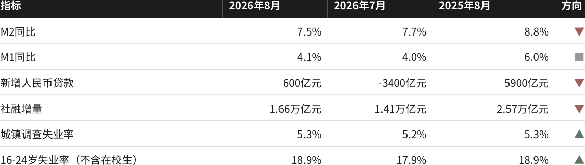
注：1—2月数据合并发布；固定资产投资为可比口径累计同比；进出口为美元计价。贸易顺差7月、去年8月为根据海关数据推算。来源：国家统
计局、海关总署、中国人民银行。
二、总量：增速下台阶，生产与需求脱节
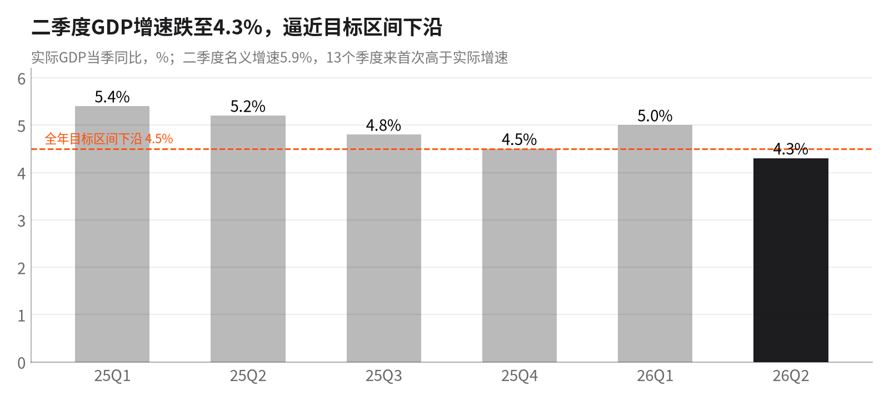
二季度GDP同比4.3%，比一季度回落0.7个百分点，环比只增0.9%，是近六个季度最低。上半年4.7%勉强处于“4.5%
—5%”目标区间内。值得注意的是二季度名义增速5.9%，13个季度来首次高于实际增速：GDP平减指数转正，但主
要是上游价格推动的，不代表终端需求好转。
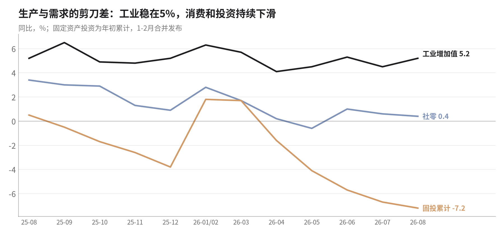
剪刀差在扩大。工业增加值一年来稳定在4%—6.5%，8月回升到5.2%；同期社零从3.4%滑到0.4%，固投累计增速从
+0.5%滑到-7.2%。生产端的产品去向主要是出口（规上工业出口交货值8月+11.1%）和库存，产品销售率96.8%同比
下降0.1个百分点。也就是说国内买的人少了，工厂靠外需和备货维持开工。
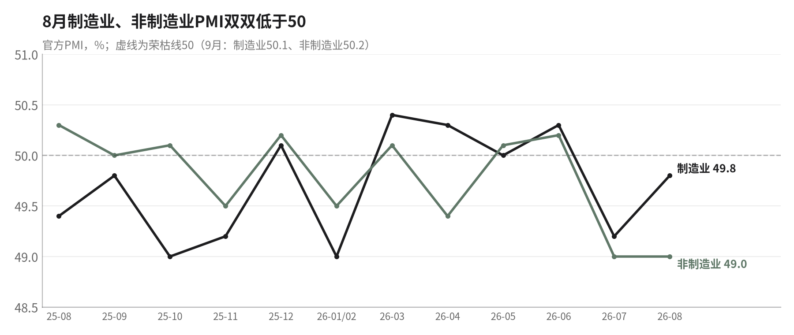
8月制造业PMI 49.8、非制造业49.0，两者都在荣枯线下；非制造业已连续两个月49.0，服务业和建筑业的景气比制造
业更弱。9月制造业PMI回到50.1、非制造业50.2，短期有所修复。
三、价格：PPI转正，但是成本推动
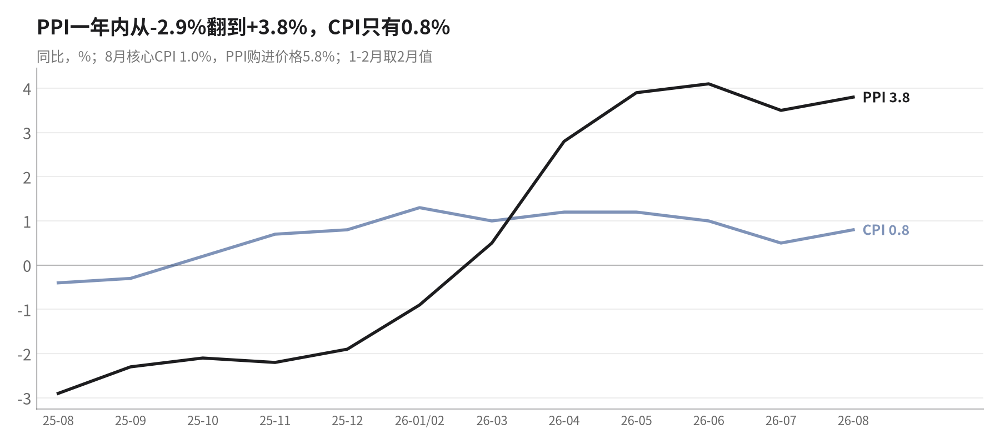
PPI从2025年8月的-2.9%翻转到2026年8月的+3.8%，12个月里上了6.7个百分点；CPI同期只从-0.4%回到0.8%，核心
CPI 1.0%。上游的涨价几乎没有传到消费端：猪肉价格同比-11.8%，食品烟酒及在外餐饮-0.7%，居住-0.3%。
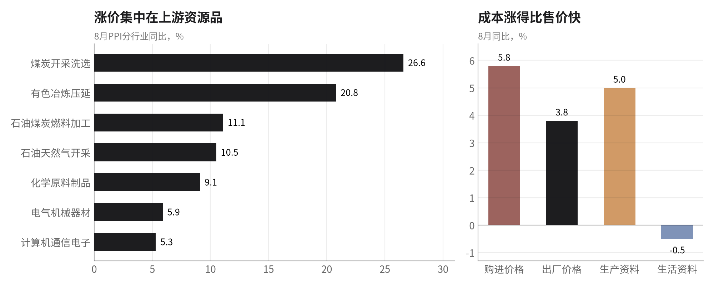
拆开看，煤炭+26.6%、有色+20.8%、石油天然气开采+10.5%、石油煤炭燃料加工+11.1%、化工+9.1%，这7个行业
合计拉动PPI约4.24个百分点，超过PPI整体涨幅；而汽车、医药、电力、非金属矿物、食品加工等6个行业价格仍在下
跌（合计拖累0.74个百分点）。成因有三：国际油价和有色金属因年初地缘冲突上涨（输入型）；煤矿超产核查和5月
事故后的安全整治压低供给（政策型）；低基数。购进价格比出厂价格高2个百分点，意味着制造业的中下游企业在被
挤利润。1—8月规上工业利润+15.7%，主要集中在上游资源和高技术行业，不是普遍改善。
四、分行业拆解
4.1 工业：电子和装备一枝独秀，传统行业收缩
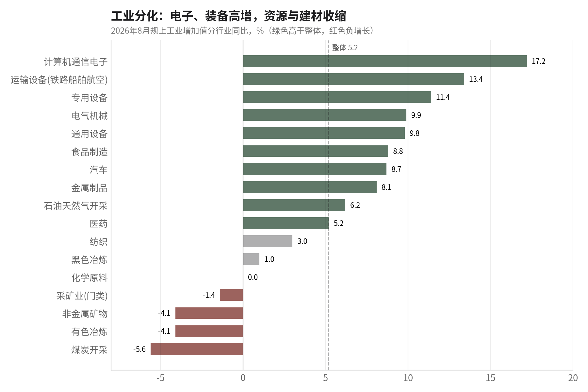
41个大类行业中29个增长。计算机通信电子+17.2%、运输设备+13.4%、专用设备+11.4%、电气机械+9.9%；高技术
制造业+16.7%，比整体快11.5个百分点。另一端是煤炭-5.6%、有色-4.1%、非金属矿物（水泥玻璃）-4.1%。分所有
制看，国有控股3.0%、私营3.7%、外资3.4%，都低于整体5.2%，只有股份制企业（5.7%）高于整体，增长集中在少
数高技术企业，多数民营企业感受不到5.2%。
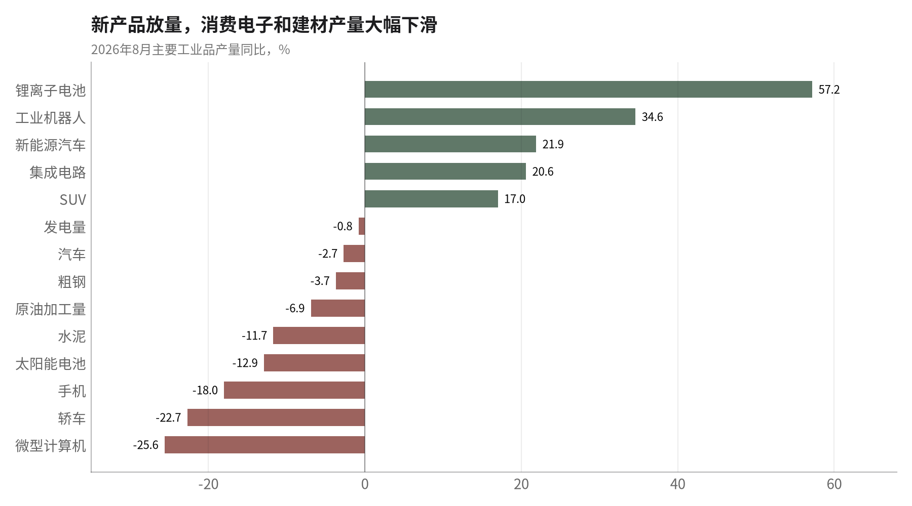
产品层面差异更极端：锂电池+57.2%、工业机器人+34.6%、集成电路+20.6%、新能源汽车+21.9%；但手机-18.0%
（其中智能手机-22.3%）、微型计算机-25.6%、轿车-22.7%。消费电子产量大跌和通讯器材零售大涨同时出现，说明
国内手机消费靠补贴拉动、而产能在外迁或去库存；芯片产量上升主要供给AI服务器链条。光伏电池-12.9%，是“反
内卷”和出口退税取消的直接结果。
4.2 消费：补贴退坡，汽车拖垮社零
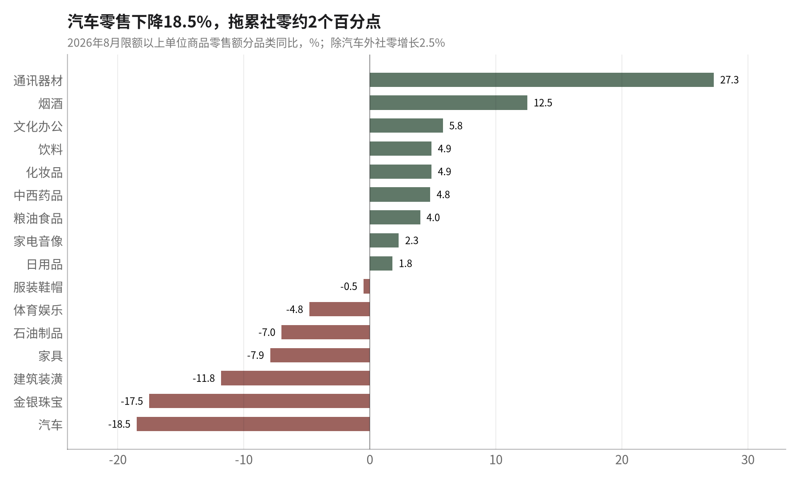
8月社零39824亿元，同比0.4%，是近一年最低水平之一。汽车类-18.5%是最大拖累，背后是：以旧换新中央资金从
3000亿降到2500亿并按季度均分、新能源车购置税从全免改为减半、2025年同期高基数。金银珠宝-17.5%反映高金价
抑制消费。家电只增2.3%（1—8月累计-5.6%），补贴效应已基本释放完。正面看，通讯器材+27.3%、烟酒+12.5%、
服务零售1—8月+4.9%，但这些不足以弥补耐用品的缺口。限额以上单位零售额-3.7%，大中型商户在萎缩，百货店、
品牌专卖店1—8月分别下降3.0%、10.0%。
4.3 投资：全面收缩
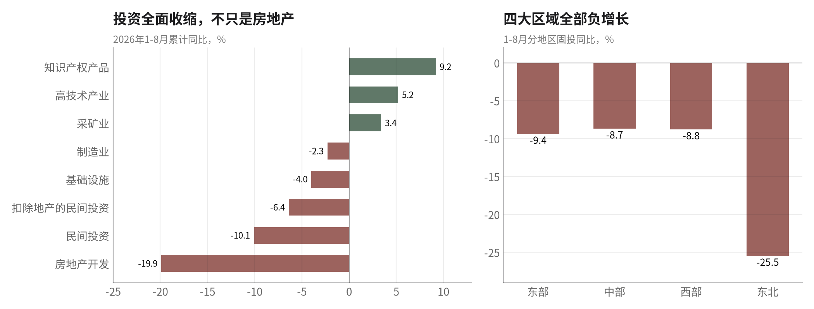
1—8月固投-7.2%，降幅连续5个月扩大。扣除地产后仍是-4.2%，说明问题不只在房地产：基建-4.0%（专项债1—7月
发行进度约55%，2026年专项债删去了收储存量房用途）；制造业-2.3%（“反内卷”抑制光伏、锂电等过剩行业扩
产，企业利润集中在上游，中游没钱也没意愿投资）；民间投资-10.1%。东北地区-25.5%。亮点只有信息传输业
+28.4%、航空运输+16.7%、知识产权产品+9.2%。
4.4 房地产：一线企稳，全国仍在下行
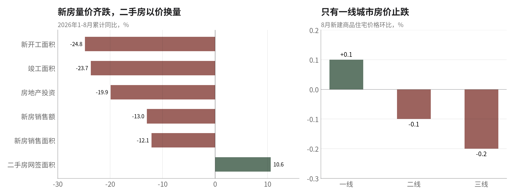
开发投资-19.9%，新开工面积-24.8%，新房销售额-13.0%；二手房网签面积+10.6%，是靠降价换来的成交。8月一线
城市新房价格环比+0.1%（上海+0.4%、深圳+0.2%、广州+0.1%，北京-0.2%），主要是北京8月8日、上海8月20日放
松限购的效果；二三线仍在下跌。8月28日“现房销售/竣工后放款”新规有利于保交楼，但会拉长房企回款周期，9月
以后新开工和开发投资还会更弱。
五、金融：信用扩张靠政府，私人部门在收缩
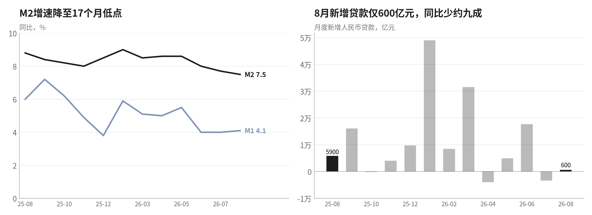
8月新增人民币贷款仅600亿元（去年同期约5900亿元），7月是-3400亿元的创纪录收缩。住户贷款8月减少2029亿
元，连续两个月净还款；企业中长期贷款增加3200亿元，但短期贷款减少1600亿元。M2同比7.5%为17个月低点，M1
4.1%，资金活化程度低。
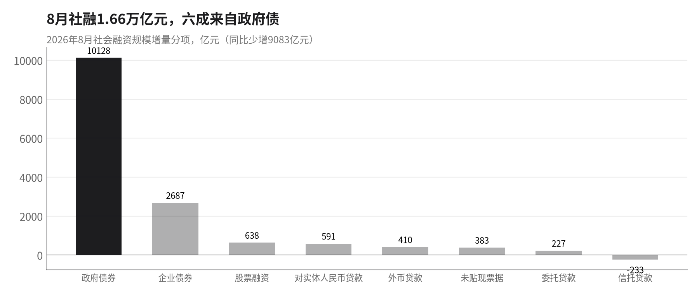
8月社融1.66万亿元，同比少增9083亿元；其中政府债券净融资1.01万亿元，占六成以上。1—8月债券和股票融资占社
融增量50.31%，首次明显超过贷款（42.78%）。官方解读强调“融资结构优化”，但从需求端看，这更像是私人部门
不借钱，只能由政府加杠杆。同时货币政策并未放松：政策利率自2025年5月以来15个月未动，2026年没有降准降
息，直到9月29日才通过PSL降息和再贷款扩容做结构性宽松。
六、就业：总体稳定，青年压力创新口径高点
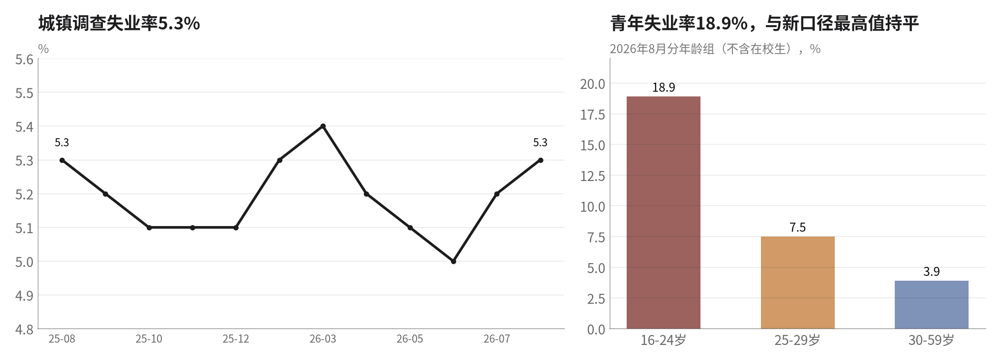
8月城镇调查失业率5.3%，与去年同期持平；30—59岁主力人群3.9%没有变化。但16—24岁（不含在校生）失业率
18.9%，追平2024年新口径以来最高值；25—29岁7.5%也比上月高0.3个百分点。吸纳青年就业最多的消费、地产相
关服务业正在收缩，而增长最快的芯片、装备行业岗位规模有限。
七、外贸与海外经济：中国增长最大的支撑，也是最大的变量
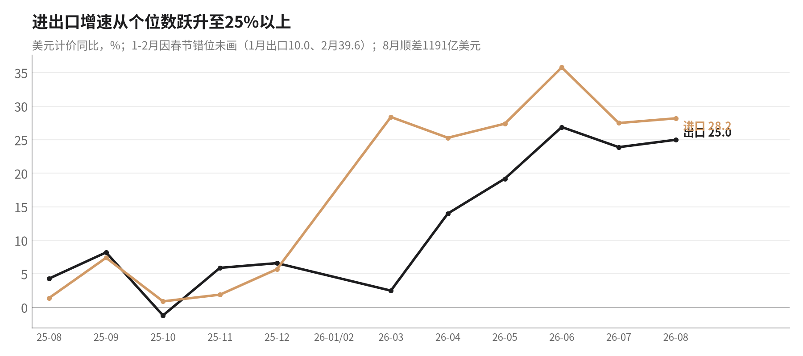
8月出口4014亿美元（+25.0%），进口2824亿美元（+28.2%），顺差1191亿美元；1—8月累计顺差约8055亿美元。
进口增速高于出口，一部分是价格（原油、有色），一部分是芯片等中间品（下图），并不代表国内需求回暖。人民
币计价出口只增18.6%，比美元口径低6个多百分点，是人民币升值的结果。
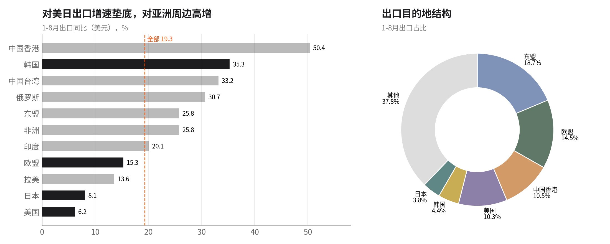
美国：8月单月对美出口+34.4%，主要是低基数（2025年高关税时期对美出口大跌）加上2月美国最高法院裁定IEEPA
关税违法后税率下降；1—8月累计只增6.2%，美国占中国出口比重已降至约10%。欧盟：8月对欧出口只增6.6%，比7
月的16.2%明显放缓，电动车、混动车的贸易摩擦仍在持续。日本：1—8月对日出口只增8.1%，日元兑人民币一年跌
12.7%，日本产品价格竞争力上升。韩国：1—8月对韩出口+35.3%、自韩进口+72.5%，两国在芯片链上深度绑定。
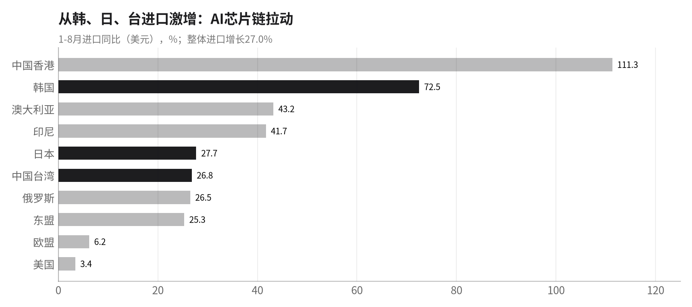
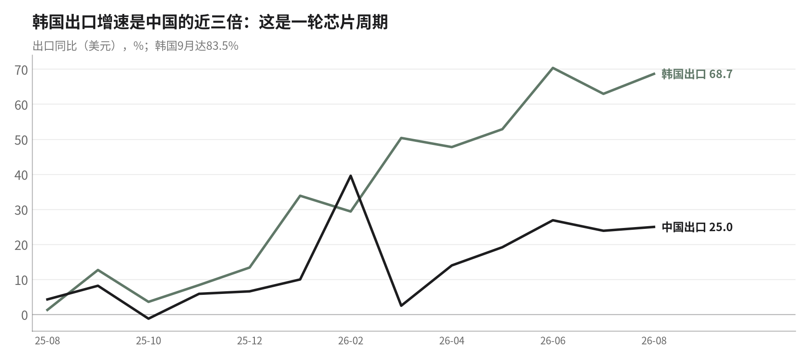
韩国出口在2026年8月增长68.7%、9月83.5%，这是一轮典型的AI存储/算力芯片周期。中国的进出口“高增长”与之
同步：从韩国、中国台湾进口芯片，再以服务器、电子组件等形式出口。这意味着中国的出口增长高度依赖单一产业
周期，一旦AI资本开支放缓，回落会很快。
海外经济：需求强，但通胀和加息带来下半年风险
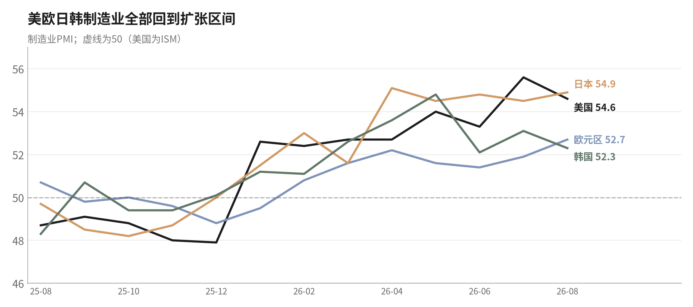
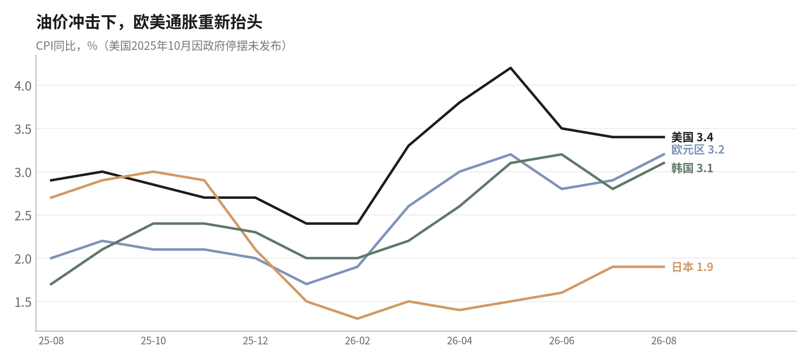
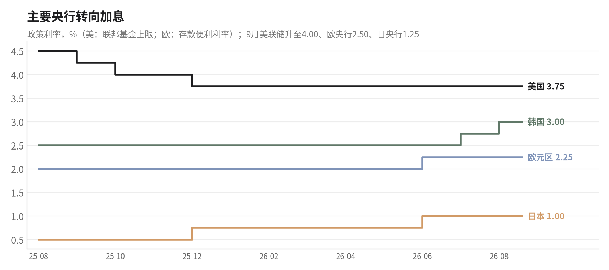
| 经济体 | 8月制造业PMI | 8月CPI同比 | 政策利率（9月末） | 2026Q2GDP | 对中国的含义 |
|---|---|---|---|---|---|
| 美国 | 54.6（ISM） | 3.4% | 4.00%（9月加息） | 年化+2.2% | 需求强于预期，但高通胀侵蚀消费；关税休战到2027.1.10 |
| 欧元 | 52.7 | 3.2%（9月 | 2.50%（6、9月加 | 环比+0.6% | 能源推高通胀，汽车、光伏贸易摩擦未解；对欧 |
| 区 | 3.8%） | 息） | 出口放缓 | ||
| 日本 | 54.9 | 1.9% | 1.25%（9月加息） | 年化+1.4% | 日元大幅贬值，中日在汽车、机械上直接竞争；双边出口管制升级 |
| 韩国 | 52.3 | 3.1% | 3.00%（7、8月加息） | 环比+0.6% | 芯片出口暴增，中韩电子链上下游同步扩张 |
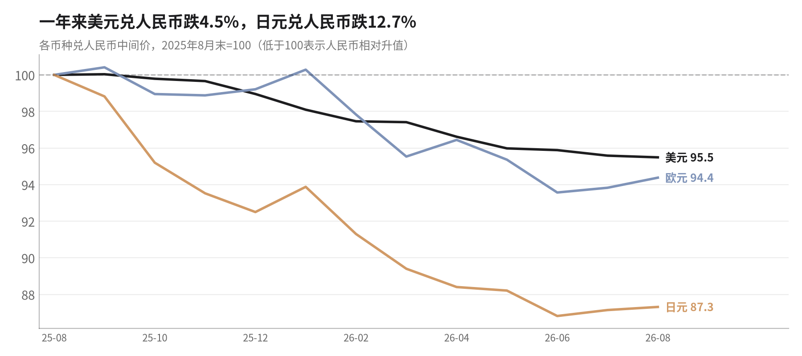
判断：2026年海外制造业周期明显好于2025年，四个经济体PMI全部在52以上，是中国出口高增的真实背景。但三个
风险同时在累积：一是2月底以来的中东冲突推高油价，欧美通胀回到3%以上，美联储、欧央行、日央行、韩国央行
都已转向加息，滞后2—4个季度会压制耐用品进口需求；二是人民币对美元一年升值约4.5%、对日元升值约14%，出
口企业利润率被压缩；三是中美休战只延到2027年1月10日，部分美方豁免文件仍写着11月9—10日到期。
八、近期实打实的政策及其效果
只列有文件、有金额或有执行日期的措施。来源为国务院、人民银行、财政部、发改委、商务部、住建部、USTR、欧盟委员会等官方文件及路
透、财新等报道。
| 时间 | 部门 | 措施 | 规模/要点 | 对8月数据的影响 |
|---|---|---|---|---|
| 2025.5起 | 人民银行 | 7天逆回购1.4%、1年LPR 3.0%、5年LPR3.5% | 至8月已15个月未动；2026年未降准降息 | 总量偏紧，信贷需求无刺激 |
| 2026.1.19 | 人民银行 | 结构性工具降息25bp；科技再贷款扩至1.2万亿、新设1万亿民营企业再贷款 | 定向，不是总量宽松 | 对整体信贷拉动有限 |
| 2026.3 | 财政部/全国人大 | 赤字率约4%（5.89万亿）；超长期特别国债1.3万亿；专项债4.4万亿 | 以旧换新资金2500亿（2025年3000亿），分4批每批625亿 | 以旧换新退坡，汽车家电销售下滑 |
| 2026全年 | 财政部 | 新能源车购置税由全免改为减半 | 单车最多多缴约1.5万元 | 8月汽车零售-18.5% |
| 2026.8.1 | 财政部等 | 消费贷贴息扩至全部信用卡分期，上限3000→5000元 | 银行8月21—22日才执行 | 8月几乎无效果 |
| 2026.8中下旬 | 国务院/发改委 | 新型政策性金融工具8000亿元 | 8月14日部署，8月底起首批投放 | 8月投资未形成实物量 |
| 2026.8.8/8.20 | 北京/上海 | 放松限购、降低首付 | — | 一线新房价格环比+0.1% |
| 2026.8.28 | 住建部、央行、金融监管总局 | 新地块原则上现房销售；预售需结构封顶；预售房按揭竣工后发放；房贷最长40年 | 房企回款周期拉长 | 9月起压制新开工 |
| 2026.1起 | 商务部/财政部 | 钢材出口许可证；光伏出口退税4月1日取消；电池退税降至6%、2027年取消 | “反内卷”出口端 | 光伏电池产量-12.9% |
| 2026.2.12 | 市场监管总局 | 汽车行业价格行为合规指南 | — | 汽车出厂价仍在下降 |
| 2026.2.20 | 美国最高法院 | 裁定IEEPA关税违法；美国改用122条款10%→301条款12.5% | 美对华平均关税约36.5%（二手来源） | 对美出口8月+34.4%（含低基数） |
| 2026.9.23 | 中美 | 经贸休战延长至2027年1月10日；各约300亿美元商品降税候选 | 部分美方豁免文件仍写11月9—10日到期 | 四季度不确定性 |
| 2026.9.29 | 人民银行 | PSL利率1.75%→1.5%；科技再贷款扩至1.4万亿 | 仍是结构性工具 | 作用在9月之后 |
| 2026.10.1 | 住建部/财政部 | 首套房（≤120㎡、≤150万元）贷款贴息1个百分点、最长5年 | — | 四季度才体现 |
政策评估
1. 财政在“退坡”而不是“加码”。以旧换新资金比2025年少500亿元，新能源车购置税优惠减半，政府债券净融资1
—8月比去年同期少1.5万亿元。在需求最弱的时候退坡，8月消费的下滑是可以预见的。
2. 货币政策总量没有动。政策利率15个月不变，而PPI已经转正，实际利率在下降。央行显然在等待：一方面担心银行
净息差（约1.40%），另一方面PPI的上涨让降息理由减弱。但CPI只有0.8%、信贷需求塌陷，说明总量宽松的必要性
依然存在。
3. 增量工具普遍“到得晚”。8000亿新型政策性金融工具8月底才投放，消费贷贴息扩围8月下旬才执行，首套房贴息
10月1日才实施，PSL降息9月29日才落地。这些政策对8月数据几乎没有贡献，对四季度会有一些支撑，但规模和2025
年的力度相比并不更大。
4. “反内卷”有效抬价，但伤到了投资。光伏、钢铁、煤炭的限产和退税调整推高了上游价格，却也压低了相关行业
的产量和资本开支，是制造业投资转负的原因之一。在内需疲弱时，供给收缩换来的是“利润在上游、压力在下
游”。
九、主要问题与风险清单
| 问题 | 证据（8月数据） | 风险判断 |
|---|---|---|
| 内需塌陷 | 社零+0.4%、限额以上-3.7%、固投-7.2%、新增贷款600亿元 | 高：四季度高基数、补贴额度用尽 |
| 增长过度依赖外需和单 | 出口+25%、高技术制造+16.7%、韩国出口+68.7% | 中高：AI资本开支一旦放缓，出口和工 |
| 一产业 | 业同步回落 | |
| 成本推动型通胀 | 购进价格5.8% > 出厂价格3.8%，生活资料-0.5% | 中：中下游利润和就业承压 |
| 居民去杠杆 | 住户贷款连续两个月下降，M2增速17个月低点 | 高：消费和地产难有自发修复 |
| 青年就业 | 16—24岁失业率18.9% | 高：毕业季后会季节性回落，但中枢偏高 |
| 地产后续 | 新开工-24.8%，828新政拉长回款周期 | 高：9月后投资降幅可能继续扩大 |
| 外部政策 | 中美休战2027.1.10到期；欧盟汽车摩擦；中日出口管制；海外普遍加息 | 中：四季度可能出现抢出口后回落 |
9月已公布数据前瞻：制造业PMI回到50.1、非制造业50.2；CPI同比0.9%；PPI同比升至5.0%；出口（美元）
+36.3%、进口+31.0%；M2增速进一步降至7.2%、M1降至3.2%。外需和价格继续走强，货币增速继续走低，8
月的“外热内冷”格局在9月没有改变。
附：数据来源
国家统计局：2026年8月国民经济运行情况、规上工业增加值、社零、固投、房地产、70城房价、CPI/PPI及解读、分年龄组失业率（2026年9月9
—17日发布），二季度GDP（7月15日）。海关总署：2026年8月进出口分国别、分贸易方式（9月8—9日）。中国人民银行：2026年8月金融统计
数据报告（9月14日）。海外：BLS、BEA、Eurostat、ECB、美联储、日本央行、韩国央行、韩国产业通商资源部、ISM、S&P Global；汇率为
人民币中间价。数据整理使用AKShare 1.19.1并逐项与官网核对。部分数字为二手来源未能核实（美对华平均关税约36.5%、美国2025Q3/Q4
GDP旧值），已在正文标注。